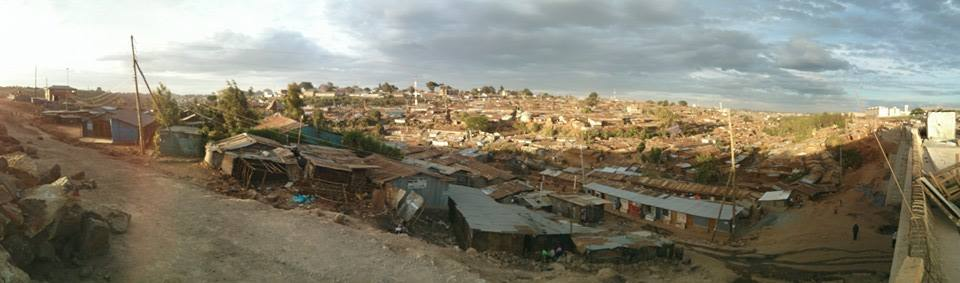
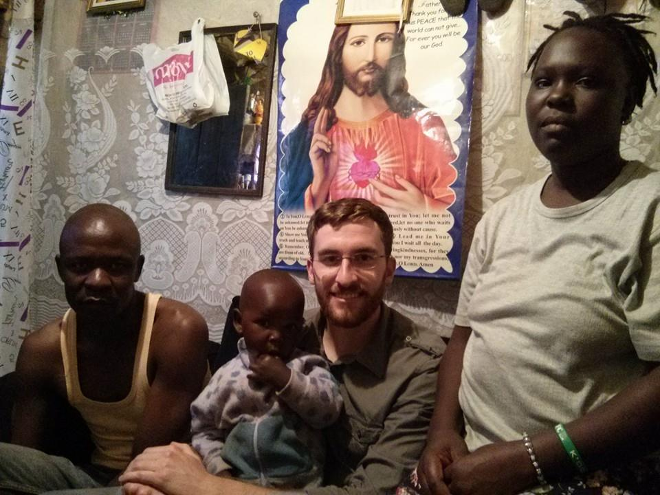

Life in Kibera
POSTED 13 OCTOBER 2013
In my last post I wrote about the experience of buying a desk in Kibera. Today I had another Kibera experience, walking through with my friend Christina. Previously I only visited the market, but today I actually walked through the slum dwellings. We walked up a hill to get a bird's eye view.
The experience of walking through Kibera is fascinating. On the one hand, children are running around seemingly happy as can be. People are living their lives. The presence of businesses, makeshift roads, electricity, schools, and even courts within Kibera gives you the sense that people have figured out how to get by. On the other hand, the public health and sanitation situation in Kibera is awful. There is a stench in the slum that I'm told you get used to. Entire families live in single-room dwellings without proper sanitation facilities. The human suffering is palpable.
While we were on our way back out, Christina and I ran into a woman named Ashar, the mother of a child that attends the school Christina works at. Ashar was kind enough to invite us into her home. We left the main road and walked through a maze of dwellings until we arrived. Once inside we were introduced to her husband Duncan and their child Vincent.
Ashar is a stay at home mother for their two children. Duncan works in downtown Nairobi doing whatever work he can find. If he is lucky enough to find work for the day, he might be paid 200 schillings (~$2). The commute to the city by bus costs 50 schillings each way, so at the end of the day he is left with 100 schillings to feed four people.
As we were leaving I asked Christina a seemingly simple question: how does that family get by? How can a family of four possibly pay for school fees, food, clothing, medicine, etc. on an income of $1 per day? Christina replied that families rely on each other. You take loans from your friends and family when you need to (often only partially repaid). You share parenting responsibilities. You chip in when someone catches a bad break. You live day to day, hand to mouth. She said that such parents live with a great deal of debt, with the hope that one day their children will get better jobs than they ever did. It's a hard life, but they seem to manage with a resolve and grace that is beyond me.
I felt as if I had to turn off my compassion while in Kibera. As a poor graduate student (poor by US standards) I'm not exactly in a position to be giving money away. At the same time, doing nothing doesn't seem right. Surely as a privileged Westerner I can give something, right?
Carolina for Kibera is a well known NGO in Nairobi. According to their website, CFK works to "promote youth leadership and ethnic and gender cooperation in Kibera through sports, young women's empowerment, and community development. Additionally, CFK works to improve basic healthcare, sanitation, and education in Kibera." In 2005 they were named by TIME Magazine and the Gates Foundation as a "Hero of Global Health." I've just made a donation to CFK, and I encourage you to do the same.
A small amount of money goes a long way in Kibera.